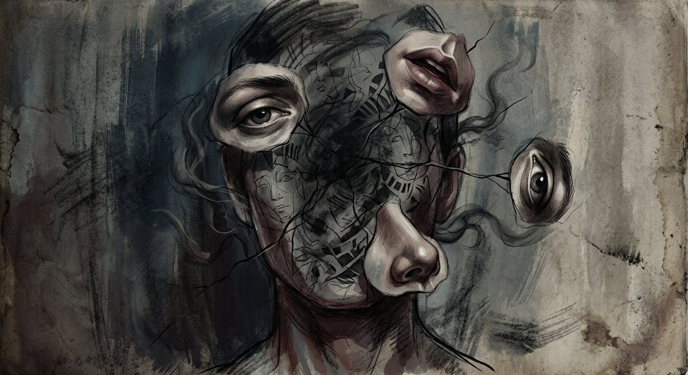
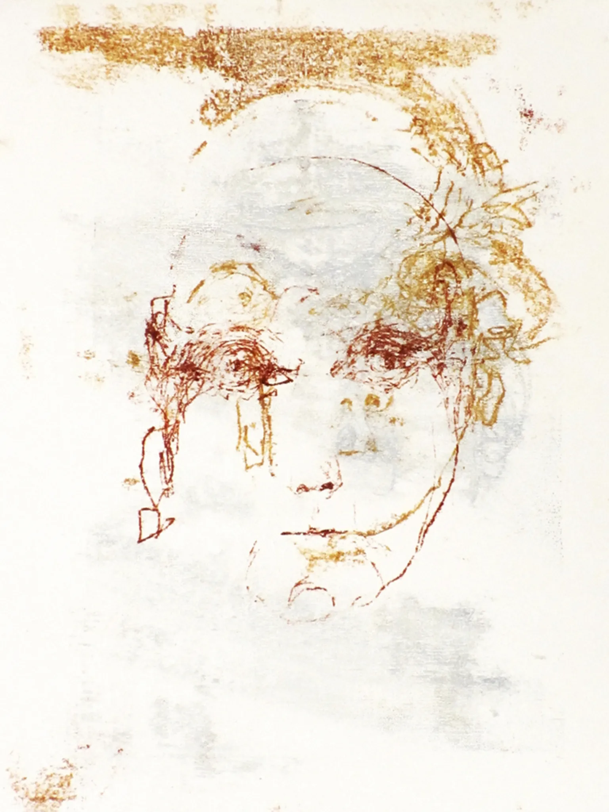

Sensation & Perception — Prosopagnosia
FACE
BLINDNESS
A neurological condition where the brain loses its ability to recognize faces — not because of damaged eyes, but because of how perception itself is organized.
↓ scroll to explore

01 — What It Is
EVERY FACE.
A STRANGER.
Imagine walking into a room full of people you love — your friends, your family, your colleagues — and feeling nothing. No click of recognition. No name surfacing from memory. Just a face, completely stripped of meaning.
This is the daily reality of prosopagnosia. Not blindness. Not memory loss. Something far more specific: the inability to translate a face into an identity. The eyes work perfectly. The brain processes every feature. But the system that binds those features into a person you know — that system is broken.
"I can describe a face perfectly. I know it has eyes, a nose, a mouth. But that information just doesn't add up to a person I recognize."
— Common description from individuals with prosopagnosiaThe world looks completely normal. Objects, places, words — all recognized without effort. It is only faces — the most socially critical visual stimulus in human existence — that fail to resolve into meaning.

02 — The Condition
THE
SCIENCE
Prosopagnosia (from Greek: prosopon = face, agnosia = not knowing) is the inability to recognize faces — including, in severe cases, one's own reflection. It is not a problem of vision, memory, or intelligence. It is a problem of perception.
There are two distinct forms. Acquired prosopagnosia results from brain injury — typically damage to the right fusiform gyrus — and can develop suddenly after a stroke or trauma. Developmental prosopagnosia appears without any identifiable brain damage, often runs in families, and affects an estimated 2–2.5% of the population. Many people live their entire lives unaware they have it.
Normal face recognition depends on something called holistic processing. The brain doesn't analyze a face feature by feature — it encodes the spatial relationships between features as a single unified whole, in one pass. Prosopagnosia disrupts this integration entirely, and in doing so reveals something profound: that human perception is deeply modular. Specialized systems can fail independently, leaving all other cognition completely intact.
03 — The Neuroscience
INSIDE
THE BRAIN
Fusiform Face Area
Located in the fusiform gyrus of the temporal lobe, the FFA responds preferentially to faces over all other visual stimuli. Damage or atypical development here is the primary neural basis of prosopagnosia.
Right hemisphere dominantOccipital Face Area
The OFA detects that something is a face before passing information forward to the FFA. It handles the earliest stage of face processing — structural encoding — before identity is even considered.
Early visual processingThe N170 Response
In neurotypical people, faces produce a distinct EEG signal 170ms after viewing. In prosopagnosia, this marker is delayed, reduced, or absent.
EEG biomarkerHolistic Processing
Faces are perceived as unified wholes, not part by part. Prosopagnosia shatters this unification — the composite face effect demonstrates what's lost.
Gestalt perceptionCompensatory Pathways
People reroute recognition through voice, gait, hairstyle, and context — remarkable evidence of neural plasticity.
Neural plasticityHeritability
Developmental prosopagnosia has strong genetic components. First-degree relatives show significantly elevated rates.
~2.5% prevalence
04 — Living With It
HOW THEY
COPE
Voice as Identity
Voice becomes the primary identifier. Many people with prosopagnosia report recognizing voices with unusual precision — the auditory system compensating where the visual system fails. Phone calls can genuinely be easier than in-person meetings.
Hair, Gait & Anchors
A distinctive haircut, an unusual walk, a scar, a signature piece of clothing — these become the actual tools of recognition. Changing your hair can make you, briefly, a complete stranger.
Context Dependency
Knowing who should be in a place is everything. Running into your doctor at a grocery store causes recognition to fail entirely, for someone you've seen dozens of times.
The Social Performance
Many people learn to smile warmly at anyone who approaches — performing recognition to avoid offense. Some disclose; others carry the confusion silently for years.
Logistical Strategies
Arriving early, memorizing who will wear what — invisible, automatic logistics that structure every social situation for someone who cannot rely on faces.

05 — Known Cases
YOU MIGHT
KNOW THEM
Prosopagnosia doesn't select for obscurity. Some of the most recognized names in culture, science, and art have lived with it — often for years before understanding what it was.
Has spoken publicly about suspecting prosopagnosia, describing the social toll when people believe he's deliberately ignoring them after failing to recognize their face.
The author of The Man Who Mistook His Wife for a Hat had prosopagnosia himself — giving his clinical writing on perception a deeply lived, personal dimension.
Described a lifelong difficulty with faces — and notably found it easier to identify individual chimpanzees by their features than to recognize many humans she knew.
Had severe prosopagnosia. Some art historians argue it directly shaped his entire method — painting faces as grids of thousands of abstract color fragments, never as a whole.
06 — Self-Assessment
DO YOU
HAVE IT?
This is not a clinical diagnosis. Only a qualified professional can determine that. But these questions reflect real screening criteria used in prosopagnosia research. Answer honestly — and pay attention to your gut reaction to each one.
1. You see someone you've met before in an unexpected place — your doctor at the gym, a coworker at a restaurant. How often do you fail to recognize them until they speak or introduce themselves?
2. When watching a film or TV show with multiple characters, how often do you lose track of who is who?
3. How would you compare your ability to recognize faces versus recognizing voices, places, or objects?
4. Have you ever failed to recognize a close friend or family member after a haircut, change in context, or change in clothing?
5. When you try to picture the face of someone you know well — a parent, a close friend — how clearly can you visualize it?
This is not a clinical diagnosis. Prosopagnosia exists on a spectrum and can only be properly assessed by a neuropsychologist using validated tests such as the Cambridge Face Memory Test. If your results suggest possible face blindness, explore resources at faceblind.org.
WE ARE
EXTRAORDINARILY
GOOD AT FACES.
Prosopagnosia doesn't just reveal a deficit. It reveals an ability. The fact that face recognition can be selectively destroyed — while all other vision, memory, and intelligence remain completely intact — proves that it is a dedicated cognitive system. Not simply seeing. A specialized module, refined by millions of years of social evolution, encoded in specific neural architecture, and so automatic that most of us will never once notice it working.
Until it doesn't.